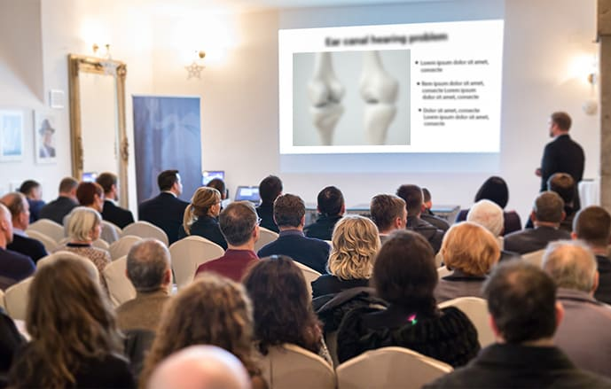

Si crees que es imposible proteger tu columna vertebral y tus articulaciones a partir de los 50 años, ¡te equivocas!
Las enfermedades articulares pueden ser tratadas en la madurez - esa es la única verdad.
Un especialista experimentado - Navarro - afirma ser capaz de curar la osteocondrosis - un trastorno de la osificación intracraneal, que ha estado inactivo en el cuerpo humano durante 18 años, se ha vuelto repentinamente activo. También admite que se las arregló para curar a una mujer de 80 años que sufría de una rara enfermedad articular en sólo unos meses. Según el profesor, los dolores articulares bien tratados desaparecen en pocos días. Después de una actuación en directo en una conocida cadena de televisión, el especialista que buscaba accedió a darnos una entrevista.
Hola, profesor. Dígame, ¿es cierto que la osteocondrosis y los trastornos articulares son inevitables en la vejez?
Hola, Sra. Editora. ¡Claro que no! El mayor problema de las personas mayores es confiar en un solo médico, aunque sus métodos de tratamiento no den ningún resultado. ¡Este es el mayor problema! Creo, y tengo experiencia, que tanto las enfermedades de las articulaciones, los dolores de la columna vertebral y el esqueleto generalizado pueden ser tratados con éxito a cualquier edad. Algunos dirán que se trata de un milagro... nada podría estar más equivocado, es ciencia pura.
Basta con saber el secreto de cómo tratar eficaz y fácilmente las articulaciones en casa. Miles de mis pacientes se preocupan por su salud así como así.
¿Podemos descubrir ese secreto?
Lo más importante es conocer la fuente del dolor. La osteocondrosis puede tener 147 causas diferentes, pero su consecuencia es siempre la misma: pérdida de flexibilidad en las articulaciones, cartílagos, vértebras, lo que causa un gran dolor. Esto es básicamente normal - una circulación sanguínea más lenta hace que las reservas de colágeno se desgasten.
Ese es el secreto, en realidad. Necesitamos restaurar el buen flujo sanguíneo, entonces nos ocuparemos de nuestras articulaciones.
¿Pero no hay una creencia en la sociedad de que es casi imposible mejorar la circulación de la sangre después de los 45 años?
Es el mayor absurdo que escucho de los pacientes. Yo mismo soy un gran ejemplo de la falsedad de esta suposición. Definitivamente tenía más de 45 años cuando me levanté de mi silla de ruedas después de mi lesión.
¿Y te las arreglaste para recoger a alguien de una silla de ruedas?
Sí, y definitivamente más de una vez. La gente común viene a mí, con más de 40 años, cansada del dolor y de la incapacidad de llevar una vida normal. A menudo sus problemas son similares: dolores en las articulaciones, nervios apretados, inflamación de la raíz del nervio. En la mayoría de ellos estos dolores se intensificaron con la edad.
Los pacientes se quejan de dolor persistente, problemas para caminar o sentarse. Son personas comunes, no personas con discapacidades o atletas. Están cansados y resignados. No dejo que se compadezcan de sí mismos, prefiero empezar a actuar inmediatamente y restablecer la circulación.
¿Cómo se restablece la circulación?
Hasta ahora, he ayudado a mis pacientes con 96 ejercicios y trabajo con entrenadores. Era un método eficaz, pero largo y difícil. Estaba convencido de que había una manera más fácil. También sabía que la gente no tiene tiempo para hacer ejercicio o ir al gimnasio todos los días. Quería ayudarles.
¡Suena fascinante! ¿Puede contarnos más sobre ello?
Me encantaría. Nuestro centro fue el único en Polonia que tuvo acceso a un nuevo tratamiento certificado para la osteocondrosis y el dolor articular. Al principio era escéptico, no creía que fuera realmente efectivo. Hasta la investigación, que me sorprendió mucho. Nuestras pruebas mostraron que 4567 pacientes habían eliminado completamente cualquier dolencia. En términos porcentuales, esto fue más del 94%. El 5,6% restante confirmó la mejora. Sólo el 0,4% no notó ningún cambio.
¿Qué es esto exactamente?
Las tabletas brindan un alivio pequeño y temporal, destruyen el sistema digestivo y envenenan el cuerpo. A su vez, las bandas magnéticas se usan exclusivamente para la industria farmacéutica. Todo esto drena la salud del hombre y el dinero pesado. Mientras que el tratamiento del prof. Recio se basa solo en ingredientes naturales y no causa ningún efecto secundario. Combate el dolor instantáneamente y reconstruye el cartílago articular día a día, restaurando la movilidad sin rigidez, crujidos y dolor. Esta fórmula innovadora es una combinación de los últimos logros en el campo de la biología molecular, la neurología y la reumatología.
Los ingredientes que contiene son totalmente naturales y seguros para la salud.Aun así, gracias a la síntesis química adecuada, tienen unas propiedades regeneradoras un 300% más potentes. Consumir estas sustancias cada día restablece la movilidad de incluso las personas con degeneraciones severas y largas, inflamaciones o complicaciones postraumáticas.
¿ sólo ayuda con la artritis y la osteocondrosis?
No, de eso se trata. El mejora la circulación, funciona a nivel celular. Por lo tanto, su acción afecta a todo tipo de trastornos de las articulaciones o la columna vertebral. Inflamación de la raíz, reumatismo, ciática, hernia de disco e incluso moretones, traumatismos o apnea. Toda una gama de problemas que millones de personas enfrentan diariamente.
Parece que esta fórmula revolucionaria tiene un amplio espectro sin precedentes. ¿Pero es cierto que el puede curar todo esto y no sólo aliviar el dolor?
El primero alivia el dolor, calma las dolencias y luego finalmente lo elimina, tratando con la enfermedad. Sigo siendo un gran partidario del deporte y el ejercicio, pero sé que mucha gente no tiene la fuerza y el tiempo para hacerlo, por lo que la fórmula es el mejor, más rápido y más eficaz tratamiento.
Siento que mucha gente querrá usarla. ¿Dónde puedes conseguirlo?
Inicialmente queríamos que estuviera disponible en todas las farmacias, pero había un problema. La industria farmacéutica teme por su industria... Si hay una droga que funciona en tantos niveles, ¿por qué comprar otras? Eso sería un gran golpe para los farmacéuticos. La gente sigue comprando innumerables medicinas, y su falta de eficacia lo impulsa todo.
Hasta ahora sólo distribuimos en la página web oficial.
Por supuesto, esto también tiene grandes ventajas. La venta sin intermediarios puede reducir el precio hasta el 4,7% del precio de venta al público.
Nuestro método de tratamiento tiene una ventaja indudable: no necesita la supervisión de un especialista, los pacientes pueden luchar eficazmente con los problemas de salud en casa. El se envía por correo, puedes pagar a la entrega, sin salir de casa... No quiero convencer a nadie a la fuerza, pero puede comprobar fácilmente la eficacia por su cuenta, sólo tiene que probar los medios disponibles en la farmacia. La verdad saldrá a la luz de todos modos. Nada puede reemplazar el tratamiento con Flexafit.
Muchas gracias por esta entrevista. Es un honor hablar con un especialista así. ¿Le gustaría decir a nuestros lectores algo más?
¡Claro! Sólo quiero advertirle que los problemas de las articulaciones o la columna vertebral afectan cada vez más a los jóvenes, no sólo a los mayores. Incluso el dolor suave pero regular es un síntoma que no debe ser ignorado. Vale la pena cuidar de tu salud cuando no es demasiado tarde.
Lo más importante: las enfermedades que afectan a la columna o a las articulaciones no sólo no permiten un funcionamiento normal. Sobre todo, pueden acortar sus vidas hasta diez años.
El especialista en P.D. decidió ofrecer un descuento en la fórmula para los primeros 50 compradores! ¡No lo dude! Entra ahora. ¡Quizás esté entre los afortunados!
Haz clic aquí para pedir con descuentoLos comentarios
Ana
hoyEs una pena que la gente a esta temprana edad empiece a tener problemas con gente mayor...
Irene
hoyEl funcionó exactamente como lo describiste, ya no tengo ningún problema con la articulación de la rodilla que me rompí por mi lesión.
Tomas
hoyMi padre usaba para las articulaciones, y en realidad le ayudaba, y ha estado cansado durante varios años.
Jose
hoyEstaría feliz de probarlo, porque mi columna vertebral también se ve afectada sólo por mi trabajo físico.
Magdalena
hoyEl dolor de espalda lo conozco perfectamente sólo en mi región lumbar, pero el funcionó en una docena de horas y desde entonces no hay dolor.
Hana
hoyHe estado solicitando durante algún tiempo y ha habido una mejora en la articulación de mi cadera porque había un problema aquí.
Bea
hoyAlivia el dolor muy rápidamente y luego lo combate completamente, pero lo importante es que elimina las causas de este dolor.
Blaís
hoyRecomiendo especialmente a las articulaciones que me ponga rápidamente de pie
Roberto
hoy¿Así que dice que va a ayudar con sus rodillas rotas?
Cristian
hoy¿Así que pido bajo este enlace? También tengo una recomendación de un especialista, así que quiero probarlo.
Cristina
hoy¿Qué precio?
Eva
hoyEstá muy bien escrito y les agradezco este post porque también busco algo que haga desaparecer estos problemas al estar sentado frente a la computadora.
Comentarios (7)